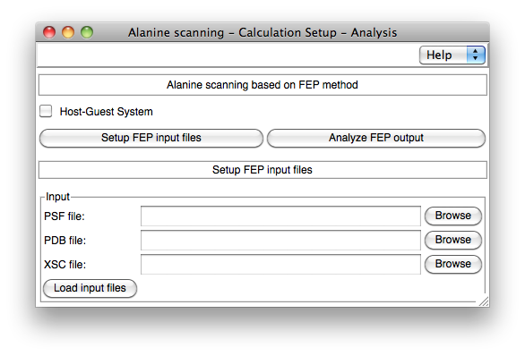
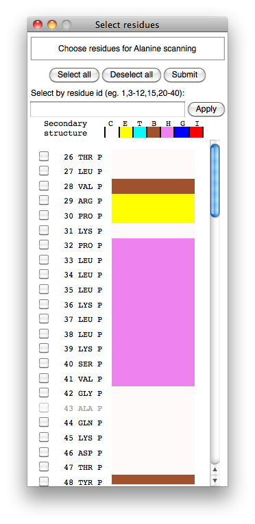
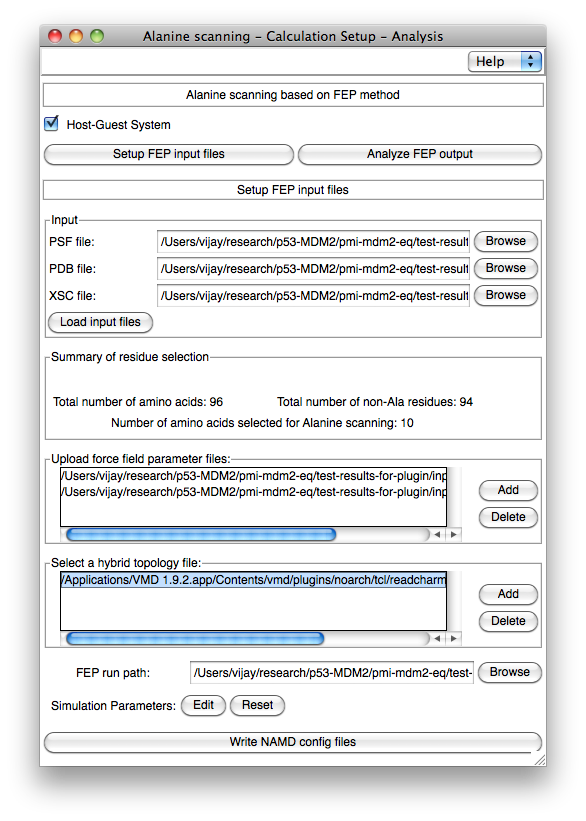
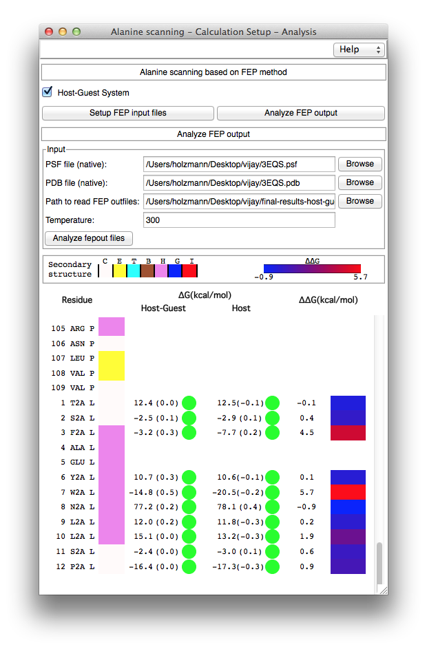

|
AlaScan is a
tool to automate the different steps involved in in-silico alanine scanning
calculations within the framework of free-energy perturbation (FEP), as implemented in the
molecular dynamics program NAMD. Implementation. The AlaScan plugin can be utilized to prepare various input files required to perform FEP calculations, specifically point mutations, wherein a residue is transformed into alanine. In addition, the plugin offers a convenient environment for the analysis of the completed free-energy calculations and assessment of their convergence. Ease of use. AlaScan has been designed for minimalist human intervention and knowledge of the theoretical underpinnings. Once the set of amino acids that will undergo mutation is selected, all the necessary files are generated seamlessly. Following completion of the FEP calculations, the end-user can visualize at a glance, by means of a color gradient, the favorable mutations, and assess the reliability of the diiferent simulations. Preparing the input files for the FEP calculations. The "Setup FEP input files" section of the AlaScan plugin can be utilized to prepare the set of input files required for FEP calculations (See Figure 1). In-silico alanine scanning experiments can be performed on either protein-ligand (and possibly protein-protein) complexes (referred to as Host-Guest), or isolated proteins (referred to as Host). In the former instance, alanine scanning is aimed at predicting changes in the binding free energy upon mutation, while in the latter instance, it is employed to identify thermostabilizing mutations. By default, the AlaScan plugin considers the segment wherein alanine mutations occur as the host. AlaScan requires as inputs a PSF, a PDB and an XSC file for the protein of interest in order to prepare (i) the hybrid structure with the suitable dual-topology, and (ii) the FEP configuration files compliant with NAMD. After loading the relevant input files, the AlaScan plugin provides a new graphical window to select the amino acids for in-silico alanine scanning experiments (see Figure 2). The plugin provides a number of options to upload the force-field-parameter and hybrid-topology files (see Figure 3). Once the necessary parameters are set up, the plugin performs a series of actions in the following order:
Analysis of the FEP calculations. The "Analyze FEP output" section of the AlaScan plugin has been designed to automate the analysis of the FEP calculations, i.e., to analyze globally multiple alanine mutations carried out on a biological object (see Figure 4). This section requires the native PDB and PSF files of the molecular assembly as an input. The physical location of the directory containing the output of the different in-silico alanine scanning experiments ought to be provided to access sequentially each free-energy calculation, e.g., the directory created in the above step (i) corresponds to the input of "Path to read FEP outfiles". The AlaScan plugin invokes another VMD plugin, namely ParseFEP, which has been designed for the post-hoc analysis of FEP calculations performed with NAMD. After analyzing the forward and backward transformations, a GUI displays the list of amino acids present in the native protein (see Figure 4). The amino acids involved in the in-silico alanine-scanning experiments are shown using a single-letter code, e.g., W2A, to denote the mutation of a tryptophan into alanine. The GUI also displays the estimated free-energy changes in the presence and in the absence of the host environment in thermostability investigations, i.e., with an isolated protein. In the case of host-guest complexes, the free-energy differences in the presence and in the absence of the guest are reported, together with the relative binding free energy calculated from each alanine substitution. Appraisal of the convergence is provided using the hysteresis of the simulation, I.e., the difference between the forward and the backward transformations. Colored circles (green, orange and red) in front of each free-energy estimate suggests at a glance whether or not the different FEP calculations have properly converged. References
Note. On platforms running a Unix-like operating system, it is assumed that XMGrace and ImageMagick (display) are installed for visualization purposes. On Windows platforms, use is made of the Multiplot plotting program. Contributors. Chris Chipot (chipot@illinois.edu) and Vijayaraj Ramadoss (vijayaraj81@gmail.com). |

Figure 1. AlaScan main graphical user interface.

Figure 2. Selection of residues that will undergo alanine mutation.

Figure 3. Assisted preparation of the FEP calculations for in-silico alanine scanning.

Figure 4. Free-energy changes upon alanine mutation and assessment of the convergence.
|